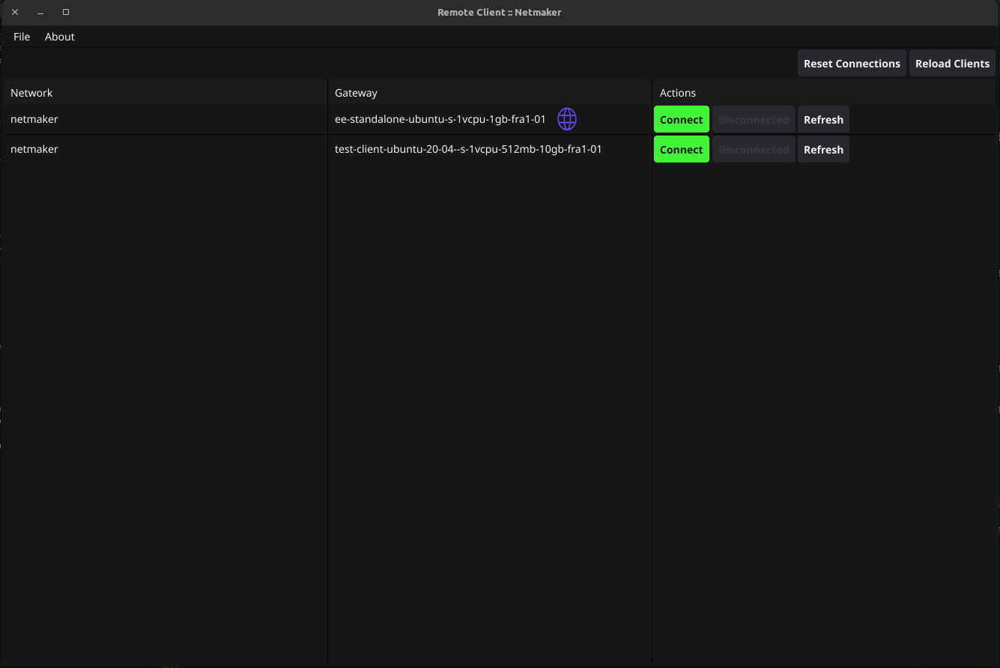

Netmaker Remote Access Client (RAC)
The Netmaker Remote Access Client, RAC for short is a GUI tool for easily getting access to a Netmaker network. RAC is mostly suited for offsite machines that need access to a Netmaker network. It supports Windows, Mac, Linux and mobile (iOS and Android).
Download/Installation
For Mac:
You can download the M1 or Intel Mac installer from our fileserver link (https://fileserver.netmaker.io/releases/download/latest) run it. Then open the GUI to start using RAC!
For Windows:
You can download the remoteclientbundle.exe bundle (recommended as this install wireguard and other dependencies) or remote-access-client_86.msi installer (MSI doesnt install any dependencies) and run it to install on your windows machine. You can then open the GUI to start using RAC! Download link: https://fileserver.netmaker.io/releases/download/latest/remoteclientbundle.exe
For mobile devices, you can download the app from the respective app stores.
Google Play Store (Android):
Scan the QR code
{kind=link}
Or use the following link: https://play.google.com/store/apps/details?id=com.net.netmaker&pli=1&utm_source=docs
Apple App Store (iOS):
Scan the QR code

Or use the following link: https://apps.apple.com/us/app/netmaker-rac/id6479694220?itsct=apps_box_badge&itscg=30200
Debian/Ubuntu Linux:
You can also use the following command to download the latest version:
curl -sL 'https://apt.netmaker.org/remote-client/gpg.key' | sudo tee /etc/apt/trusted.gpg.d/remote-client.asc
curl -sL 'https://apt.netmaker.org/remote-client/debian.deb.txt' | sudo tee /etc/apt/sources.list.d/remote-client.list
sudo apt update
sudo apt search remote-client # to see available versions
sudo apt install remote-client
Red Hat Distros (Fedora/RedHat/CentOSRocky):
curl -sL 'https://rpm.netmaker.org/remote-client/gpg.key' | sudo tee /tmp/gpg.key
curl -sL 'https://rpm.netmaker.org/remote-client/remote-client-repo' | sudo tee /etc/yum.repos.d/remote-client.repo
sudo rpm --import /tmp/gpg.key
sudo dnf check-update
sudo dnf install remote-client
Following the above instructions, you can run RAC from your Linux desktop environment launcher or from the command line using the remote-client command.
Not finding your OS? You can download the latest version of RAC from the our file server: https://fileserver.netmaker.io/releases/download/latest
Search for remote client and download the appropriate version for your operating system.
Quick Start
NOTE: OpenGL is a requirement for Netmaker RAC to run. If you are running RAC on a virtual machine (especially with Windows as guest OS), you may need to enable 3D acceleration in your virtual machine settings.
To use RAC, you will need to have a Netmaker server running and have a user account on that server. You will also need to have a remote access gateway set up on the server. Client devices connect to the network through the remote access gateway (ingress host).
Check this section on how to create a non-admin user. RAC is best suited for non-admin users who want to gain remote access to the network, this also provides admins fine-grained control over users in the network by attaching/removing them from a remote access gateway. Admins can also use RAC to gain remote access to the network with a different machine.
Using the Remote Access Client (RAC)
Once a user has been attached to a remote access gateway, they can connect to a network using the remote access client. To do this, they will first need to log in using the credentials that were provided to them. Social login is also supported.

After successful login you will be shown all the networks and gateways you have given access to, so now you will be able to connect/disconnect/refresh your connection to a gateway. Internet gateways are depicted with a globe icon. An internet gateway can be used to route all your traffic through the gateway, this is useful if you want to access the internet without exposing your public IP address. This behaves like a traditional VPN.
{kind=link}
The remote access client also has the following options:
Refresh connection: This basically disconnects the current connection to the remote access gateway and then reconnects to it.
Reload clients: This reloads the client data on the page, which can be useful if the data has changed since the page was last loaded.
{kind=link}
Reset: This resets all connections to remote access gateways across all Netmaker servers and networks known to the client. This can be useful if you end up with a bad wireguard or network interface configuration or are having trouble connecting to a gateway. you should only use this option if Refresh connection does not work.
Using Netmaker like a traditional VPN
Some remote access gateways, specifically internet gateways (depicted by globe icon) can route all your traffic through the them. This can be useful if you want to access the internet without exposing your public IP address. This behaves like a traditional VPN. Internet gateways is a Pro-only feature.
Controlling RAC user sessions
On pro servers/tenants, the duration of a non-admin user’s remote session can be controlled. This can be done by setting RAC_AUTO_DISABLE (to true) and JWT_VALIDITY_DURATION (to an integer in seconds) environment variables on the server.
With RAC_AUTO_DISABLE set to true, a non-admin user’s remote sessions will be disabled after the duration specified in JWT_VALIDITY_DURATION has elapsed. The user will have to relogin to enable their remote session again.
NOTE: The JWT_VALIDITY_DURATION environment variable also configures all the JWT token validity duration for all users, regardless of whether RAC_AUTO_DISABLE is set to true or not.
(Re)Starting the service/daemon process
On very few occasion, the RAC daemon may not be running and will need to be restarted manually. There are two ways to resolve this:
Restart the computer. The daemon starts automatically on boot so restarting the computer will start the daemon on next startup.
Manual restart. The exact procedure depends on your operating system.
Manual daemon restart on Windows
Open Task Manager.
Go to the “Services” tab.
Look for the “remote-client” service.
Right-click on the service and select “Restart” or “Start”.
Manual daemon restart on Linux
On Linux, RAC daemon relies on systemd to manage the service. You can restart the service using the following command:
sudo systemctl restart remote-client
Manual daemon restart on Mac
On Mac, RAC daemon relies on launchd to manage the service. You can restart the service using the following command:
sudo launchctl stop com.netmaker.remote-client
sudo launchctl start com.netmaker.remote-client
FAQs and Known Issues
Q: I am getting an error when trying to connect to a gateway.
A: Make sure that the gateway is running healthily and that you have access to it. Also try to “Refresh” and see if that fixes the issue. Otherwise “Reset” all connections and try again.
Q: Other WireGuard-based VPNs interfere with Netmaker RAC.
A: This is a known issue. If you have other WireGuard-based VPNs running on your machine, they may interfere with Netmaker RAC. You can try to disable them and see if that fixes the issue. Pro-tip: Netmaker Pro offers internet gateway functionality, so you can use it just as a traditional VPN. For more information, explore the Remote Access gateway feature.